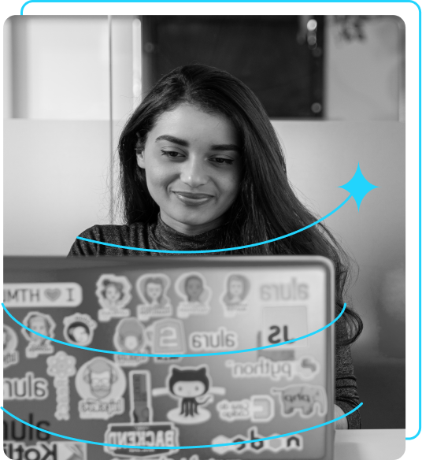

Eleve tu negocio digital a otro nivel un Front-end de calidad!
Hola otra Vez
Texto Urgente
Ahora que has entendido el modelo de caja CSS, aplica este conocimiento en tu proyecto. Selecciona un elemento específico (por ejemplo, un párrafo) y ajusta las propiedades de margen, borde, relleno y contenido. Observa cómo cada cambio afecta la posición y apariencia del elemento en la página.
¡Hola! Soy Ana García, desarrolladora Front-end con especialización en React, HTML y CSS. Ayudo a pequeños negocios y diseñadores a llevar a cabo buenas ideas. ¿Hablamos?
Instagram GitHub 